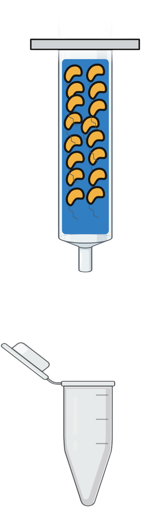

Instructions
- Click on "Start the Experiment" button.
- Click on "Ni-Nta Column" checkbox. Next click on "Equilibration" checkbox. To see the chemical group click on the blue beads.
- Now, click on "Cell lysate/ Protein solution" checkbox and on the falcon. Click "Protein of Interest" button to see the 6X his taq protein. Then click on "Sample Loading" button to load the proteins in the tube.
- First, click on "Washing" checkbox then click on "Buffer A" checkbox to display the buffer bottle. Then click on Buffer A bottle to load it in the column. Now click on the "Removal of unbound proteins" boxes to remove unbounded proteins. To check the interaction between protein of interest with Ni-NTA beads, click on "Binding of proteins of interest with Ni-NTA beads" checkbox.
- Click on "10 % of Buffer B" checkboxes to display the buffer bottle. Now, click on the Buffer B bottle to load buffer in the column. Next, click on the checkboxes from "20%" to "100% of Buffer B" accordingly.
- Click on the "Data Acquisition" button to plot the sample graph
- Click on the "SDS-PAGE Analysis" button and on "Show" button to view the gel.
Action
Input panels
| Step 1 |
|
| Step 2 |
|
| Step 3 |
|
| Step 4 |
|
| Step 5 | |
| Step 6 | |
Step 1

Step 2


Step 3


Step 4



Step 5
Step 6